Making datasets could
be a little more fun
A dataset manager made for curating training data for Booru-tag based models, with a focus around Anima by Circlestone labs.
Osmium is feature-dense, comes with plenty of QoL features, and contains a slew of comprehensive visual customization to make curating datasets a hobby that doesn't make you scratch your head like a monkey.
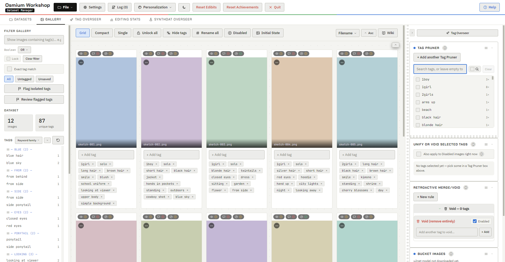
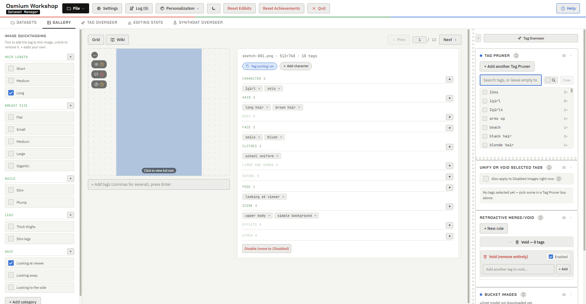
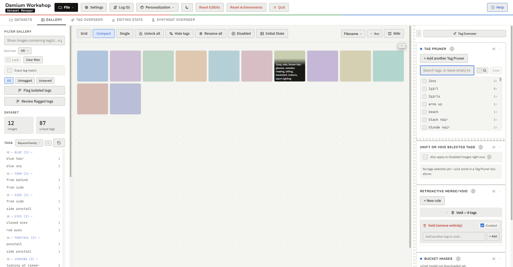
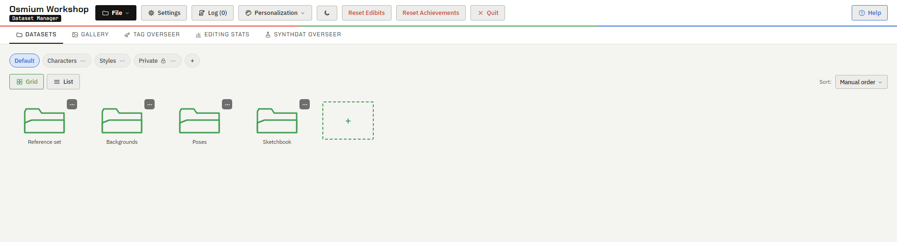
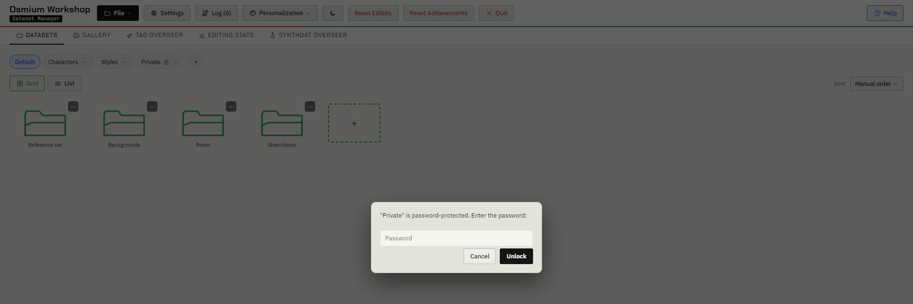
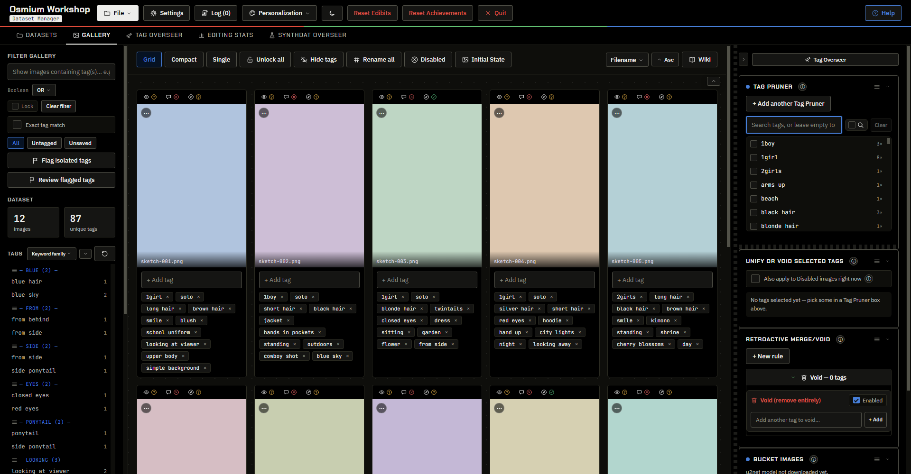
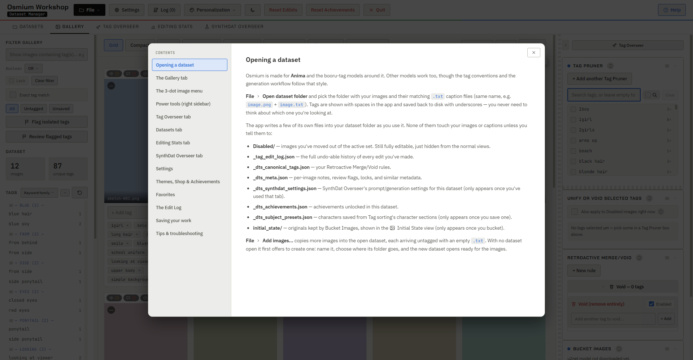
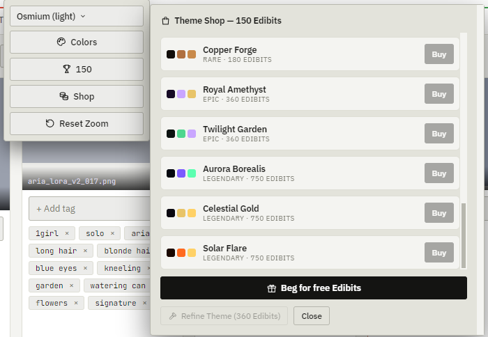
Test it live, right here
Don't wanna download it yet? Don't fret; I put the damn thing on its own page right here on github. That way you can put your slimy little mitts all over my pristine buttons without any committment. Click the big fat linkie up above this text plate to get there.
Since I don't want you to think I'm putting viruses on your PC/Laptop/glorified potato wired to a GTX by asking you to test it on your own datasets, I threw in an example dataset: Chromatic Void. Every image is still untagged.
You can use this opportunity to try out a bunch of Osmium's functions. Note that while the WD14 and SynthDat functions "work" in this demo, they are faked, preset outputs. But hey, cut me some slack okay? I decided against asking you to wire your Comfy to some shady site since it was in bad taste.
Visual Customizability
If you're going to stare at a dataset for a few hours, why not make it less of an eyesore? Both Osmium and ComfyBridge feature a slew of themes, each with a toggleable animated background. Hopefully it makes staring at the same image a lot less grating (also I don't like ugly dataset managers).
You can even test out Osmium's themes right here with the site's theme dropdown, or from the demo itself.
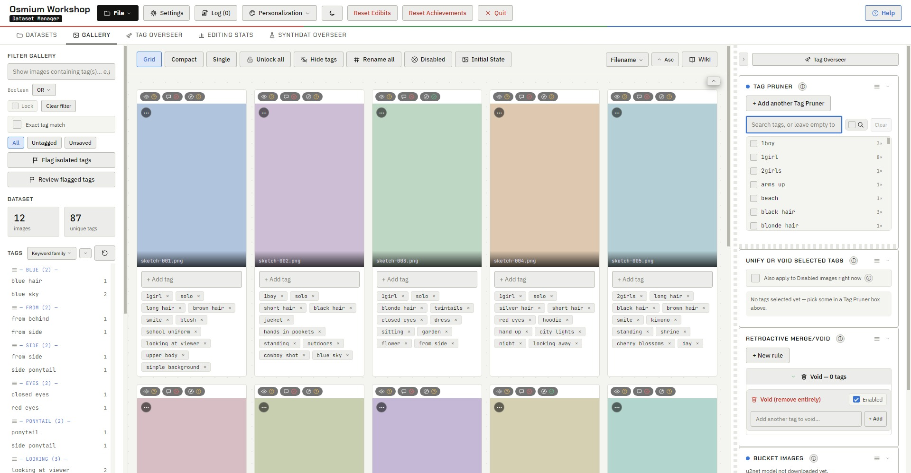
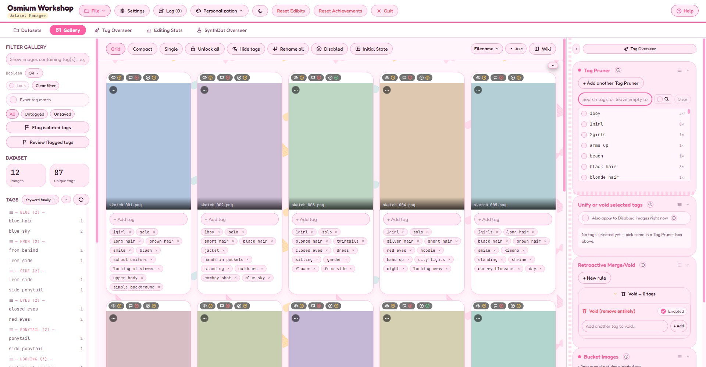
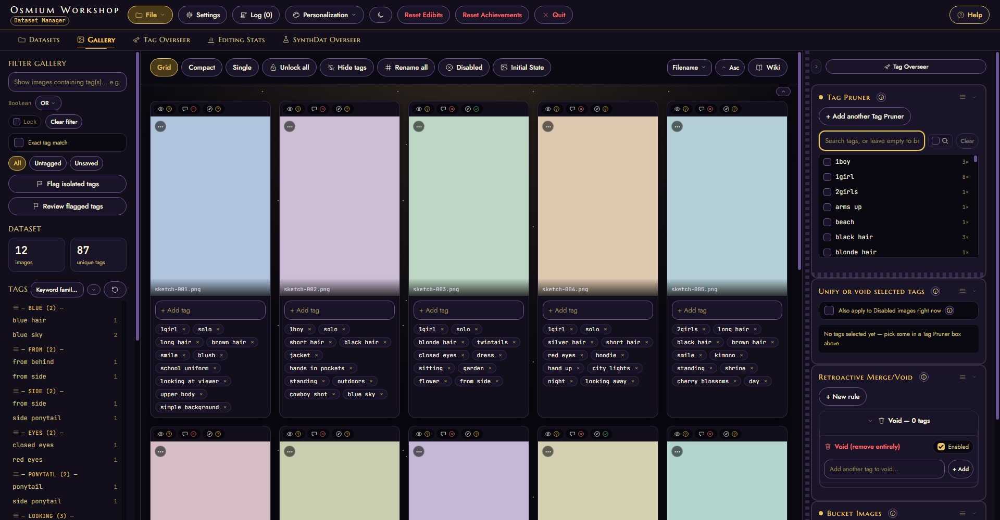
Because it wasn't enough to have a gazillion vibecoded dataset managers out there
You can shove 3 different flavors of Osmium down your computer's gullet.
How fun.
Osmium Workshop — Desktop
The Dataset manager. Used for tagging images and generating additional material for small datasets.
↓ Download (Windows)Osmium Workshop — Mobile
The same app on Android, for tagging on the go. Touch layout, on-device WD14, ComfyUI generation over LAN or Tailscale. Currently in testing.
↓ Android APKComfy Bridge
A simpler ComfyUI webUI with one built-in workflow, for when you just want the image without wrangling a node graph.